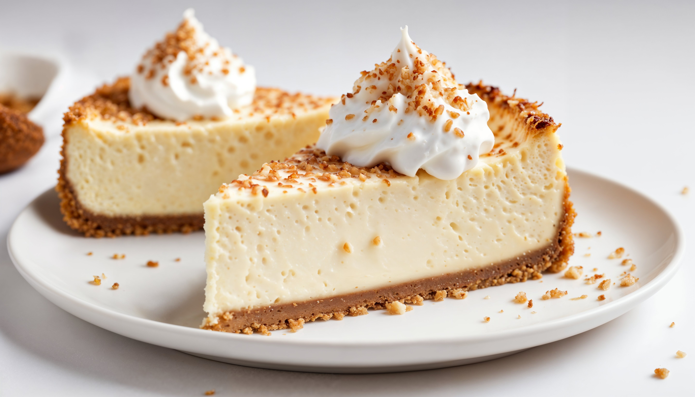

Biscoff Cheesecake

Designed by Freepik
If you want to know what all the internet fuss is about this incredible
biscoff cheesecake, follow this recipe by Taming Twins
Ingredients
For the Base
- 200g Biscoff biscuits (Crushed)
- 80g Unsalted Butter (Melted)
For the Cheesecake mixture
- 300ml Double cream
- 400g Full fat cream cheese
- 200g Biscoff spread
For the Topping
- 150g Biscoff spread (Melted)
- 50g Biscoff biscuits (Crushed)
Steps
-
Combine the crushed biscoff biscuits with the melted butter and press
into a tin. Chill in the fridge while you make the topping.
-
Pour the double cream into a bowl, add the cream cheese and Biscoff
spread. Whisk until it's very thick – almost the consistency of ice
cream. Use an electric whisk if you have one.
-
Remove the base from the fridge and add the cheesecake mixture,
smoothing the top.
-
Pop into the fridge for at least 3 hours (or overnight is much better
if you don't need it until the next day).
-
When you are almost ready to serve the cheesecake, melt the Biscoff
spread very gently in a pan. (Don't let it get hot.)
-
Remove the cheesecake from the fridge and, while still in the tin,
pour the melted Biscoff over the top. Smooth it out very gently with
the back of a spoon, until the top is completely covered. (Take care
not to touch the cheesecake mixture.) Sprinkle the remaining crushed
biscuits around the edge.
-
Return the cheesecake to the fridge for at least a further hour if you
have the time. You could cut it sooner but it won't be as neat.